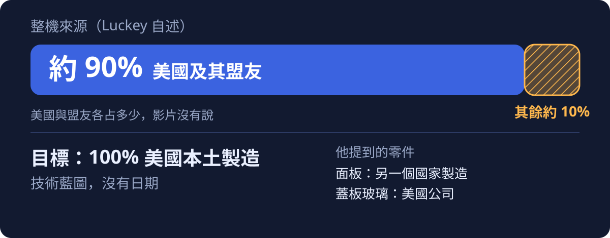
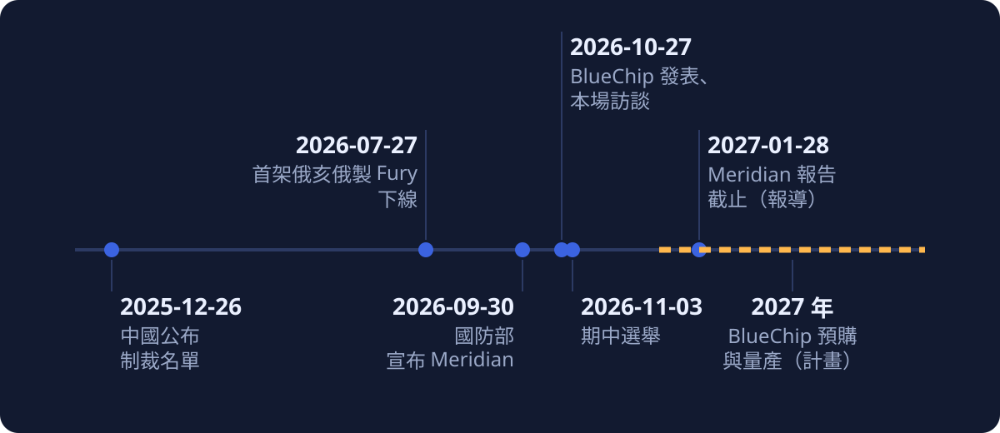

深度導讀（簡報版）
九成來自美國與盟友，面板還在海外：Luckey 談 BlueChip 美國製筆電
Bloomberg Tech 專訪 Anduril 創辦人 Palmer Luckey（2026-10-27）逐頁導讀：他想說什麼，以及與現況哪裡不同
整理：2026-11-02 資料截至 2026-11-02
影片：Bloomberg Tech 專訪 Palmer Luckey（YouTube，14:43）。本簡報的時間點（如 04:12）都指這支影片，可點開對照；也有雙語字幕播放器與全文譯本。
三十秒版：他想說的五件事
- 國家最關鍵的系統不該跑在最大戰略對手做的電腦上，所以 Anduril 自己做了 BlueChip。
- 先賣給政府與關鍵產業；軍規做得到，其他人的需求就綽綽有餘。
- 美國的半導體補貼只補到晶片，把晶片封裝、做成產品的環節沒人能做。
- 現況約九成來自美國及盟友，面板在另一個國家；他說有 100% 的技術藍圖，但還不能說是哪家公司。
- 他自己被中國制裁，正因如此 Anduril 早已學會不靠中國；他共同主持的 Meridian 要看未來戰爭，他對採購的看法是快買、不再有用就停。
他的說法與現況有出入的地方，集中放在第二幕。
這場訪談是直播，字幕是機器聽的
| 項目 | 內容 |
|---|---|
| 節目 | Bloomberg Tech，主持人 Ed Ludlow；2026-10-27 播出，片長 14 分 43 秒 |
| 受訪者 | Palmer Luckey，Anduril 創辦人 |
| 時間點 | 期中選舉（2026-11-03）前一週 |
| 字幕 | YouTube 自動字幕，無說話者標記，未對照原音 |
第一幕整理 Luckey 在訪談裡說的話；第二幕集中對照文件與報導，並用下面的標示說明可信度：
- （已確認）有官方或一手文件，且與說法吻合
- （當事方自揭）只有 Luckey 或 Anduril 自己說
- （單方說法）只有單一來源
- （有爭議）來源之間互相衝突
- （部分確認）只有一部分有來源支持
- （未找到）找不到出處
- （有落差）與來源的內容不同
- （本文歸納）本文自己的整理與判斷
第一幕：Luckey 想說的事
依主題整理他的主張，時間點可點開對照。
他說：現在約九成來自美國與盟友，面板還在海外

他的類比：無人機就是電腦
「Anduril 攻擊型無人機和筆記型電腦唯一的差別就只在於鍵盤和螢幕」（05:28）
他的本錢：無人機的整合經驗，加上軟體團隊
- 他說自己每天都在美國製造東西，Anduril 的無人機基本上就是電腦，有記憶體、GPU、CPU、感測器、電池與強固設計（05:20、05:22）。
- 主持人問 Lattice 與製造怎麼平衡；Luckey 說 Anduril 做軟體的人比所有硬體產品團隊加起來還多（08:07），Lattice 是驅動戰鬥機、潛艦與飛彈的 AI 大腦（08:13）。
- 這台筆電不能只跑 Microsoft Office 和 Gmail，要相容許多 2000 年代、90 年代甚至 80 年代設計的政府舊應用程式，需要驅動程式介接已有數十年的舊系統，「這需要大量的軟體工作」（08:21）。
- 他也提到公司名稱縮寫是 AI（08:00）。
- 本文歸納：除了美國製造，舊系統相容是最具體的產品差異，政府與關鍵產業能拿它直接接上舊設備。
第二幕：補述，他說的與現況
集中對照文件與報導，只在這一幕提。
補貼與供應鏈：他說的，與現況
| Luckey 說的 | 現況 |
|---|---|
| 補貼只補到晶片，沒人能封裝（03:27） | NIST（2024-12-20）：Amkor 亞利桑那公司最高 4.07 億美元，用於約 20 億美元的 Peoria 先進封裝與測試廠（NIST）（已確認）；該廠是否已投產未知。終端產品組裝沒有找到對應的 CHIPS 補貼項目（未找到）。他把晶片封裝和終端組裝攪在一起，論點放在終端組裝比較站得住腳（本文歸納） |
| 高通已宣布在亞利桑那製造晶片（03:20） | TechCrunch 寫晶片由 TSMC 亞利桑那廠製造，高通自己的公告沒找到（部分確認） |
| 約九成來自美國及盟友，面板在另一個國家（07:00） | TechCrunch 引述同一說法（當事方自揭），並指明面板在中國製造（單方說法）；影片沒有說明 90% 的計算方式，無法換算還差多少 |
| 有 100% 的技術藍圖（07:16） | 沒有日期，也沒有廠商，只有他自己說（當事方自揭） |
| 無人機和筆電只差鍵盤和螢幕（05:28） | 這個類比說明 Anduril 有把電子零件整合成強固系統的能力，但沒回答消費級筆電的兩個難題：量大時的成本，以及面板這類單一零件的供應（本文歸納） |
37,000 美元的估算，找不到出處
37,000 對 3,500
- 他說分析師估價是 37,000 與 100,000 美元（04:40）；這兩個數字找不到出處（未找到）。
- 常見的分析師估算是 Wedbush 的 Dan Ives 所說，美國製 iPhone 可能超過 3,500 美元（CNN 經 CTV News 轉載，2025-04-09）。
- 若字幕沒有聽錯，差了一個數量級；可能是字幕或口誤，也可能他指的是另一份分析，無法判斷。
制裁：有文件的是 Luckey 本人，2025 年名單的轉載沒有 Anduril 公司
- 公告轉載（鳳凰網）：10 名高階主管第一位是 Luckey（已確認）；20 家企業沒有列出 Anduril。另有報導稱 2024 年底曾制裁 Anduril，未能核實；「Anduril 同樣被制裁」沒有一手公告佐證（有爭議）。
- Fortune／AP 標題同樣是創辦人被點名；「分裂主義者」「恐怖分子」不是公告用語，是他的轉述。
Meridian：共同主持與 120 天可查，其餘多是他的說法
| Luckey 說的 | 現況 |
|---|---|
| 三位共同主席、120 天（09:19、09:26） | Hegseth 2026-09-30 宣布，Musk、Luckey、Gingrich 共同主持，期程 120 天（Asia Times）（已確認）；「指導委員會」是他的用語 |
| MITRE 運作（09:30） | Defense Daily 報導國防部選了 MITRE；也有說法稱備忘錄只寫「合作單位」，未能核實（有爭議） |
| 約 20 人、Axon 創辦人 Rick Smith 參與（09:16、09:42） | 沒有找到對應說法（當事方自揭） |
| 2040、2050 年的戰爭樣貌（11:05） | 官方只說研究未來戰爭；2040、2050 是他的說法（當事方自揭） |
| 報告 1 月提交（主持人問，10:36） | 據 Stars and Stripes 報導，截止日為 2027-01-28，未經官方原文核對（單方說法） |
工廠、客群、日本：他說的，與現況
| Luckey 說的 | 現況 |
|---|---|
| BlueChip 在 Arsenal 1 生產（14:33） | JobsOhio（2026-07-27）：俄亥俄州 Pickaway County；完整建成後規劃 500 萬平方英尺，Anduril 承諾資本投資 9.105 億美元，2035 年前創造 4,008 個職位；首架俄亥俄製 Fury 下線（JobsOhio）（已確認）。電路板組裝在 Arsenal 1 進行，是主持人開場與他的說法（00:11、14:33），不在這份新聞稿裡 |
| 先賣政府與關鍵產業，其他所有人的需求就綽綽有餘（02:00） | TechCrunch：首款客群是軍方、政府、第一線救援與執法，預購在 2027 年開放，並引述他另一場的說法：比一般高階 PC 貴約 20%（單方說法）。目前客群只有政府與關鍵產業，更大的市場還停在口頭（本文歸納） |
| 日本在談修憲，好在境內接納核武（13:20） | Jiji 2026-08-07：首相高市未明確排除檢討非核三原則，外界解讀為指「不允許帶進」一項（Jiji／Adnkronos）。非核三原則是政策原則，不是憲法條文，「修憲」在報導裡沒有對應內容（有落差） |
第三幕：限制與接下來
接下來：限制、時間軸、五件事。
時間軸：該驗證的事，多半落在 2027 年

接下來該盯的五件事
- 面板供應商：他說 2027 年公布更多，希望 CES 有進展。
- 價格與交貨日期：目前都沒有。
- 首批出貨的美製比例。
- Meridian 報告：報導稱截止日為 2027-01-28。
- 高通是否另有官方說明。
本文歸納：這場訪談屬於計畫宣布。在那之前，BlueChip 的價值判斷要停在「合理的論點，尚未被證明」。
製作說明：這篇導讀由 AI 模型完成
- 分析、撰稿、翻譯與查證皆由 AI 模型完成：主控為 Claude Sonnet 5.5；批次翻譯為 Gemini（經 agy 執行），修詞為 Claude；背景查證由 Claude 子代理加主控直接讀頁。沒有人類校稿。
- 本簡報由長文版導讀濃縮而成；長文版經未參與撰稿的 Claude Opus 子代理獨立審稿，再由 Opus 依總編輯準則潤稿。簡報另經 Opus 子代理獨立審稿（內容與視覺各一）並複查；版面由三位 Opus 子代理實作，經 Opus 與 Codex 看圖審查。最後依使用者指示重排結構（講者主張為先、現況對照集中）並潤稿，由 Claude Sonnet 5.5 主控完成，再經一位 Opus 子代理審查、依意見修正，修正後未再複查。
- 依據是 YouTube 自動字幕，並以機器翻譯成繁體中文，未對照原音，字幕可能聽錯人名與數字；說話者歸屬依上下文判斷。
- 查證原則：重要說法須有一手來源或主流媒體，只有單方者降級標示。
- 資料圖為本文以程式繪製的 SVG；封面的筆電分解圖是由 Codex（imagegen）生成的示意插圖，僅作裝飾，不是 BlueChip 實機，也不代表各零件的產地。
- 另有全文譯本與雙語字幕播放器。
來源清單
- Bloomberg Tech：Anduril's Luckey Partners With Qualcomm to Build American-Made Laptop（影片），2026-10-27
- TechCrunch：Anduril, Qualcomm launch BlueChip, a new kind of US-made laptop，2026-10-27
- NIST：Biden-Harris Administration Announces CHIPS Incentives Award with Amkor，2024-12-20
- CTV News（轉載 CNN Business）：iPhone could triple in price to $3,500 if they're made in the US，2025-04-09
- Fortune／AP：Anduril founder Palmer Luckey among sanctioned by China，2025-12-26
- 鳳凰網（轉載中國外交部公告）：對美國防企業與高管採取反制措施，2025-12-26
- JobsOhio：First Ohio-Built Fury Rolls Off Arsenal-1，2026-07-27
- Asia Times：Hegseth taps three to lead Future of Warfare project，2026-10-02
- Stars and Stripes：Elon Musk, Project Meridian，2026-10-01
- Defense Daily：Project Meridian panel，2026-10-06
- Jiji／Adnkronos：Takaichi refrains from denying revision of nonnuclear principles，2026-08-07